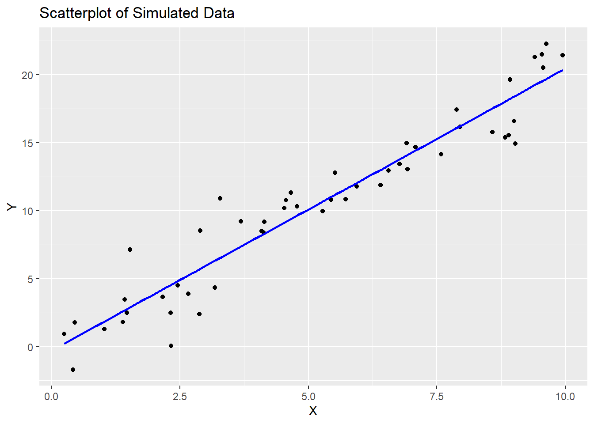

10 Descriptive Statistics
For this section, we will make use of Ch6PRactice.RData. Since the file is in RData format, we will only need to load it in R.
10.1 Preliminaries
10.1.1 Install Packages
We install and load the psych , stargazer, kableExtra and gtsummary packages and load tidyverse package.
if(!("psych" %in% installed.packages()[,"Package"])) install.packages("psych")
if(!("gtsummary" %in% installed.packages()[,"Package"])) install.packages("gtsummary")
if(!("stargazer" %in% installed.packages()[,"Package"])) install.packages("stargazer")
if(!("kableExtra" %in% installed.packages()[,"Package"])) install.packages("kableExtra")
library(psych)
library(tidyverse)
library(gtsummary)
library(stargazer)
library(kableExtra)10.1.2 Load the dataset
## used (Mb) gc trigger (Mb) max used (Mb)
## Ncells 4136156 220.9 6945420 371.0 6945420 371.0
## Vcells 35464329 270.6 142307337 1085.8 222355213 1696.5We subset the data:
# Create a subset of the dataset with only female respondents
Dataset_CP_f <- Dataset_CP %>% filter(HH2a_Sex == "Female")
# Create a subset of the dataset with only male respondents
Dataset_CP_m <- Dataset_CP %>% filter(HH2a_Sex == "Male")
str(Dataset_CP_m)## tibble [1,723 × 49] (S3: tbl_df/tbl/data.frame)
## $ Country : Factor w/ 34 levels "Austria","Belgium",..: 20 25 3 8 12 16 7 21 6 6 ...
## $ ID : chr [1:1723] "NL5063519" "SI1042916" "BG1396625" "EE1261010" ...
## ..- attr(*, "label")= chr "Unique respondent ID"
## ..- attr(*, "format.spss")= chr "A60"
## ..- attr(*, "display_width")= int 9
## $ HH1_Num_People : num [1:1723] 2 3 2 2 2 2 1 2 2 1 ...
## $ HH2a_Sex : Factor w/ 2 levels "Male","Female": 1 1 1 1 1 1 1 1 1 1 ...
## $ HH2b_Age : num [1:1723] 63 63 89 52 81 54 59 76 70 53 ...
## $ HH2d_EmploymentSituation : Factor w/ 10 levels "At work as employee or employer/self-employed",..: 7 1 7 7 7 6 1 7 7 1 ...
## $ Q1_PaidJob : Factor w/ 4 levels "Yes","No","Don't Know",..: 1 NA 1 1 1 1 NA 1 1 NA ...
## $ Q2_Empoyment : Factor w/ 6 levels "Self-employed without employees",..: NA 3 NA NA NA NA 3 NA NA 3 ...
## $ Q3_Contract : Factor w/ 9 levels "On an unlimited permanent contract",..: NA 1 NA NA NA NA 1 NA NA 1 ...
## $ Q4_Occupation : Factor w/ 13 levels "Armed forces",..: NA 4 NA NA NA NA 6 NA NA 6 ...
## $ Q7_HoursWeekWork : num [1:1723] NA 35 NA NA NA NA 37 NA NA 25 ...
## $ Q7a_AdditionalJob : Factor w/ 4 levels "Yes","No","Don't know",..: NA 2 NA NA NA NA 2 NA NA 2 ...
## $ Q7b_HoursWeekWeekAddJob : num [1:1723] NA NA NA NA NA NA NA NA NA NA ...
## $ Q7c_Work : Factor w/ 4 levels "Yes","No","Don't Know",..: 2 NA 2 1 2 2 NA 2 2 NA ...
## $ Q8_HoursWeekWorkPref : num [1:1723] 0 30 0 40 0 20 30 NA 40 38 ...
## $ Q9_HoursWeekWorkPartner : num [1:1723] NA NA NA 41 NA 30 NA NA NA NA ...
## $ Q10_HoursWeekWorkPartnerPref: num [1:1723] 0 30 0 30 0 40 NA NA 35 NA ...
## $ Q17_Rooms : num [1:1723] 6 3 1 NA 3 4 2 3 3 1 ...
## $ Q18_Tenancy : Factor w/ 8 levels "Own without mortgage",..: 2 3 1 1 5 1 1 1 4 4 ...
## $ Q19a_ShortageSpace : num [1:1723] 0 0 0 0 0 0 1 0 0 1 ...
## $ Q19b_Rot : num [1:1723] 0 0 0 0 0 0 0 1 0 0 ...
## $ Q19c_Leaks : num [1:1723] 0 0 0 0 0 1 0 1 0 0 ...
## $ Q19d_NoFlusingToilet : num [1:1723] 0 0 0 0 0 0 0 0 0 0 ...
## $ Q19e_NoBathShower : num [1:1723] 0 0 0 0 0 0 0 0 0 0 ...
## $ Q19f_NoOutside : num [1:1723] 0 0 0 0 0 1 0 0 0 0 ...
## $ Q20_LeaveAccomodation_NoAff : Factor w/ 6 levels "Very likely",..: 4 3 4 4 4 4 4 4 4 4 ...
## $ Q24_Trust : Factor w/ 12 levels "1 - you can't be too careful",..: 8 6 1 9 5 10 6 2 3 4 ...
## $ Q25a_TensionClass : Factor w/ 5 levels "A lot of tension",..: 2 2 2 2 1 1 2 1 3 4 ...
## $ Q25b_TensionWork : Factor w/ 5 levels "A lot of tension",..: 2 2 4 2 1 1 2 1 3 3 ...
## $ Q25c_TensionSex : Factor w/ 5 levels "A lot of tension",..: 3 3 2 3 1 1 3 2 2 2 ...
## $ Q25d_TensionsAge : hvn_lbl_ [1:1723] 3, 3, 2, 98, 1, 1, 2, 2, 3, 2, 2, 98, 3, 1, 2, 3, 1, 3, 2, 2, 2, 3, 3, 2, 2, 2, 2, 3, 3...
## ..@ label : chr "Q25d Old people and young people / How much tension is there in this country?"
## ..@ na_values : num [1:2] 98 99
## ..@ format.spss: chr "F8.0"
## ..@ labels : Named num [1:5] 1 2 3 98 99
## .. ..- attr(*, "names")= chr [1:5] "A lot of tension" "Some tension" "No tension" "(Don’t know)" ...
## $ Q25e_TensionRace : Factor w/ 5 levels "A lot of tension",..: 1 2 4 2 1 1 2 2 2 1 ...
## $ Q25f_TensionReligion : Factor w/ 5 levels "A lot of tension",..: 1 2 4 3 2 1 2 2 2 1 ...
## $ Q25g_TensionSexOrient : Factor w/ 5 levels "A lot of tension",..: 2 3 4 1 1 1 2 3 3 4 ...
## $ Q37a_HoursWeekChildren : num [1:1723] NA 5 NA 4 NA NA NA NA NA NA ...
## $ Q37b_HoursWeekHousework : num [1:1723] 14 NA NA 4 6 NA 7 12 3 5 ...
## $ Q37c_HoursWeekElderly : num [1:1723] 3 NA NA NA NA NA NA NA NA NA ...
## $ Q48_Education : Factor w/ 472 levels "1010","1011",..: 306 361 44 111 174 226 91 312 78 76 ...
## $ Q49_Area : Factor w/ 6 levels "The open countryside",..: 3 3 4 2 2 2 4 2 2 4 ...
## $ Q50a_NeighbourhoodNoise : Factor w/ 5 levels "Major problems",..: 3 3 3 3 3 3 3 3 3 2 ...
## $ Q50b_NeighbourhoodAir : Factor w/ 5 levels "Major problems",..: 3 3 3 3 3 3 3 3 2 4 ...
## $ Q50c_NeighbourhoodWater : Factor w/ 5 levels "Major problems",..: 3 3 3 2 3 1 3 3 3 4 ...
## $ Q50d_NeighbourhoodCrime : Factor w/ 5 levels "Major problems",..: 3 3 2 3 3 3 2 3 3 1 ...
## $ Q50e_NeighbourhoodLitter : Factor w/ 5 levels "Major problems",..: 3 3 2 2 3 3 3 3 3 1 ...
## $ Q50f_NeighbourhoodTraffic : Factor w/ 5 levels "Major problems",..: 3 2 4 3 3 3 3 3 3 4 ...
## $ Q51a_AccServicesPost : Factor w/ 7 levels "With great difficulty",..: 3 3 5 3 3 1 2 2 3 4 ...
## $ Q51b_AccServicesBank : Factor w/ 7 levels "With great difficulty",..: 3 3 5 3 3 1 4 5 3 4 ...
## $ Q53c_QualityPublicTransport : Factor w/ 12 levels "1 - very poor quality",..: 7 6 3 8 5 2 4 11 8 7 ...
## $ Income_PPP : num [1:1723] 3191 4172 478 426 887 ...Do Descriptive Statistics for Female Respondents. We compare.
10.2 Frequency Table
Run a Frequency Table for the number of hours the respondents spend caring for children and/or grandchildren per week (variable Q37a_HoursWeekChildren). For both sex separately, report the mean and standard deviation.
10.2.1 Male
Calculate the descriptive statistics for the variable Q37a_HoursWeekChildren, using the function describe of the package psych:
## vars n mean sd median trimmed mad min max range skew kurtosis se
## X1 1 575 16.86 15.53 10 14.36 10.38 1 100 99 1.83 4.65 0.65Notice how we directly use the describe function on the variable Q37a_HoursWeekChildren (called with the dollar sign operator, $, which works as follows: name_dataset$name_variable - notice that to access a specific variable, some functions can use the pipe operator while others require the dollar sign operator, as in this case). Notice also how we call the function describe: we use the :: operator, which tells R to look for a function within a specific package as follows
name_package::name_function
You could also simply call the function by only using its name, R will then search for that specific function across all the loaded R packages. However, if more packages have functions with the same name, specifying the name of the package with the :: operator helps assuring the usage of the correct function.
Report the Frequency Table for the variable Q37a_HoursWeekChildren, using the function tbl_summary of the package gtsummary:
Dataset_CP_m %>%
select(Q37a_HoursWeekChildren) %>%
tbl_summary(
statistic = list(all_categorical() ~ "{n} ({p}%)"), # Show count & percentage
missing = "no" # Exclude missing values (set to "ifany" to include)
) %>%
modify_header(label = "**Hours per Week with Children**") # Customize header| Hours per Week with Children | N = 1,7231 |
|---|---|
| Q37a_HoursWeekChildren | 10 (5, 24) |
| 1 Median (Q1, Q3) | |
The table shows that there are 1, 723 non-missing observations for the variable, Q37a_HoursWeekChildren
The median value of hours per week with children is 10 hours. (5,24) represents the interquartile range. Q1 (5): The first quartile (25th percentile) and the third quartile (75th percentile) are 5 and 24 hours respectively. This simply means that 50% of the responses lie between 5 and 24 hours per week.
When interpreting:
“The median hours per week spent with children of males is 10 hours, with half of the respondents reporting values between 5 and 24 hours. The total sample size is 1,723.”
Moreover, in R there are other ways to access specific elements within a dataset. Datasets are organized in rows (which represent our observations) and columns (which represent our variables). We can select a specific cell of a dataset as follows: name_dataset[row, column], where row is the number(s) of row(s) we are interested in and column is either the number or the name of the column we are interested in. For instance, if we want to select the value of the variable Q37a_HoursWeekChildren for the third observation, we can use the following command
Dataset_CP[3,“Q37a_HoursWeekChildren”]
If we do not specify a value for the rows (or columns), we select all the rows (or columns) of the specified columns (or rows). For instance, the following command selects all the observations for the variable Q37a_HoursWeekChildren
Dataset_CP[ ,“Q37a_HoursWeekChildren”]
10.3 Histogram
Plot the histogram for the variable Q37a_HoursWeekChildren
ggplot(data = Dataset_CP_m, aes(x = Q37a_HoursWeekChildren)) +
geom_histogram(bins = 50,
color = "darkred",
fill = "pink") +
theme_minimal()+
labs(title = "Histogram: Hours per week spent taking care of children", subtitle = "Only male respondents")+
xlab("Hours per week spent taking care of children (Question 37a)") +
ylab("Count") +
theme(plot.title = element_text(color = "darkred",
size = 14,
face = "italic"),
plot.subtitle = element_text(color = "darkred", size = 12, face = "italic"))
Depending on the data, different number of bins are more or less appropriate. In this case, we indicate that we want our data to be split in 50 intervals. You could indicate a different number or you could also leave the bins option out of the code and let R select it (R will give a warning (not error) about the number of bins which has been selected). Each type of graph has its own set of options that can be set, use the help function to learn more about them.
Next, we call a pre-defined layout of the graph called theme_minimal. There are many pre-defined layouts and you are free to choose whichever you like the most, or even create your own layout (which is partially what we do with the last layer).
In the fourth layer we use labs in order to define the title of the graph, we add a subtitle and we specify the name of the axes. There are more options that you can define within labs, use help(labs) to find out what these are.
Finally, we edit the appearance of the title and subtitle using theme and introducing the elements plot.title = element_text() and plot.subtitle = element_text(), where we specify their color, size and face. With that, we are able to change the format of the title and subtitle, however, it is not always necessary. If you want to find out more options that you can specify within theme, you can use help(“theme”) or search in Google.
10.4 Summary Table
To summarize, we can build a table showing the mean and the standard deviation for the variable Q37a_HoursWeekChildren for the two groups, separately. To do so, we use two features:
First, in the menu bar of your Quarto document (on top), we click on “Table” and then select “Insert Table”. A new window will appear and ask us the number of rows and columns our table should include. Once the table has been created, we can fill in its cells with whatever we wish to present in the table.
Second, we use inline code, which allows us to embed directly into the text the output of an R code (you can find more information about inline coding here).
A chunk of code, as we have seen so far, is separated from the text of our Quarto document and does not allow us to build a readable text combining words with output from R codes which in one linear sentence. So, if we want to say:
The number of male respondents in our dataset is equal to
## # A tibble: 1 × 1
## n
## <int>
## 1 1723We can clearly see that this is not ideal when using a chunk of code.
To better integrate this into our text we can use inline code. To do so, in the menu bar of our Quarto document (on top), we click on “</>”, then we type r and add a space and then write the line of code we would like to execute in order to include its output into the text. In our previous example, this could be done by writing as an inline code “r Dataset_CP_m %>% summarize(n = n())”, as follows:
The number of male respondents in our dataset is equal to 1723
This could be useful, for instance, if we wish to present some properties of the data without us manually copy-pasting the numbers from the console to the text. At the same time, we can use this to populate our table, as we indeed do below.
Note:
In a Quarto document, you can run the code which is included in a chunk of code with the green play button. This allows you to execute and visualize the output of that specific command. Unfortunately, inline codes do not have the same option. Inline codes will be executed only when the Quarto document is rendered. This means that you cannot directly see the result of inline codes before you render your Quarto document nor you can verify if that code is correct (and if it is not, the rendering will not work).
To overcome this issue, you can copy-paste the code of your inline code into the Console and run it from there. This will allow you to verify if the code is correct and what is the output.
We have created here a table summarizing some of the descriptive statistics for the male respondents in our dataset. Take a look at this table:
| Male | Code | |
|---|---|---|
| N_total | 1723 | Dataset_CP_m %>% summarize (n=n()) |
| N_missing | 1148 | Dataset_CP_m%>% summarize(n_na=sum(is.na(Q37a_HoursWeekChildren))) |
| N_valid | 575 | Dataset_CP_m%>%summarize(n_valid=sum(!is.na(Q37a_HoursWeekChildren))) |
| Mean | 16.8591304 | Dataset_CP_m%>%summarize(mean = mean(Q37a_HoursWeekChildren, na.rm=T)) |
| Median | 10 | Dataset_CP_m%>%summarize(median = median(Q37a_HoursWeekChildren, na.rm=T)) |
| Std. Deviation | 15.5294252 | Dataset_CP_m%>% summarize(sd=sd(Q37a_HoursWeekChildren, na.rm=T)) |
Notice how we use the pipe operator on the dataset to compute the descriptive statistics with the summarize function and
the n function to calculate the total number of observations;
the is.na function to calculate the number of observations with missing values;
the ! operator combined with the is.na function to calculate the opposite of the number of observations with missing values, i.e., the number of observations with valid values;
the mean function to calculate the mean, with the na.rm option set to TRUE to tell R that there are missing values and it should compute the mean without considering the missing values;
the median function to calculate the median, with the na.rm option set to TRUE to tell R that there are missing values and it should compute the median without considering the missing values.
the sd function to calculate the standard deviation, with the na.rm option set to TRUE to tell R that there are missing values and it should compute the standard deviation without considering the missing values.
10.4.1 Summary Table using Stargazer
We can create a descriptive statistics table for respondents including mean, median, SD, min, and max:
We do this by combining psych package with stargazer. We also need to create a data frame since stargazer can’t handle tibbles. out= is so that we can have the tables and we can copy-paste them.
desc <- psych::describe(Dataset_CP_m %>%
select(Q37a_HoursWeekChildren))
#We don't need all stats
desc_table <- desc %>%
select(mean, median, sd, min, max) %>%
as.data.frame()
desc_table$Variable <- rownames(desc_table)
desc_table <- desc_table[, c("mean", "median", "sd", "min", "max")]
stargazer(desc_table,
type = "text",
summary = FALSE, # Don't summarize again
title = "Descriptive Statistics: Selected Variable (Male Respondents)",
out="Desc_Stats_HWC.txt")##
## Descriptive Statistics: Selected Variable (Male Respondents)
## ===================================================
## mean median sd min max
## ---------------------------------------------------
## Q37a_HoursWeekChildren 16.859 10 15.529 1 100
## ---------------------------------------------------The output would be as a text but you can also save the table to HTML by changing type = "text" to type = "html"
10.4.2 Summary Table with Grouping and Stargazer
Say you want to see Q37a_HoursWeekChildren by PaidJob. We use describeBy command which is similar to describe() but it works when you want to group by factor.
desc_grp<-psych::describeBy(Dataset_CP_m$Q37a_HoursWeekChildren,
group = Dataset_CP_m$Q1_PaidJob,
mat = TRUE) # mat=TRUE gives a nice combined data frame which we use for stargazerdf_grp <- as.data.frame(desc_grp)
stargazer(df_grp, type = "text",
summary = FALSE,
title = "Hours with Children by Paid Job Status",
out="HWCbyPJS.txt")##
## Hours with Children by Paid Job Status
## ====================================================================================================
## item group1 vars n mean sd median trimmed mad min max range skew kurtosis se
## ----------------------------------------------------------------------------------------------------
## X11 1 Yes 1 189 16.566 17.453 10 13.405 10.378 1 100 99 1.738 3.175 1.269
## X12 2 No 1 14 10.714 10.845 6.500 9.500 6.672 1 35 34 1.063 -0.263 2.898
## X13 3 Don't Know 1 0 Inf -Inf -Inf
## X14 4 Refusal 1 1 40 40 40 0 40 40 0
## ----------------------------------------------------------------------------------------------------10.5 Control Variables
10.5.1 What is a Control Variable?
A control variable is a variable that is included in an analysis to account for alternative explanations of a relationship between an explanatory variable and an outcome variable. Control variables are chosen based on theory and prior knowledge.
Suppose we are interested in the relationship between:
Sex
Hours spent caring for children per week
If other characteristics differ systematically between men and women, and those characteristics also affect caregiving time, then differences we observe may not be attributable to sex alone. Control variables helps us isolate the relationship of interest. There are potential control variables we can use but, for now, we use HH1_Num_People due to care tasks may be shared in larger households.
10.6 Confounding Variables
10.6.1 What is a Confounding Variable?
A confounder is a variable that is associated with both:
- The explanatory variable and
- The outcome variable
When a confounder is omitted, the estimated relationship between the explanatory variable and the outcome may be biased or misleading.
In our example,
Explanatory Variable: Sex
Outcome variable: Hours caring for children
Confounder: Hours worked per week (
HoursWeekWork)
We consider HoursWeekWork as a confounder due to meeting both criteria for confounding:
- Men and women differ, on average, in hours worked per week.
- Individuals who work more hours typically have less time available for childcare.
As a result, observed differences in caregiving time between men and women may partly reflect differences in labor supply rather than caregiving preferences or norms.
Descriptive statistics allow us to detect potential confounding.
10.7 Difference between Control Variables and Confounding Variables
| Type | Variable | What it does / Why we care | Interpretation Example |
|---|---|---|---|
| Control variable | HH1_Num_People | Extra factor that only affects the outcome. We include it to be fair. | We check caregiving hours while making sure household size isn’t confusing the result. |
| Confounding variable | Q7_HoursWeekWork | A factor that affects both the explanatory and the outcome. | Men and women might work different hours, and the more hours someone works, the less time they have for caregiving. |
10.8 Descriptive Statistics of Control and Confounding Variables
For this portion, I will show you the Descriptive Statistics of our outcome, explanatory, control and confounding variables:
a. Create our data frame
#Start with males
df_m <- Dataset_CP_m %>%
select(Q37a_HoursWeekChildren, HH1_Num_People, Q7_HoursWeekWork) %>%
na.omit() %>%
as.data.frame()
# Females
df_f <- Dataset_CP_f %>%
select(Q37a_HoursWeekChildren, HH1_Num_People, Q7_HoursWeekWork) %>%
na.omit() %>%
as.data.frame()b. use psych::describe
c. Combine both descriptive statistics results from psych::describe
both_dsc <- data.frame(
Variable = rownames(dsc_male)[1:3],
Mean_Male = dsc_male$mean[1:3],
Mean_Female = dsc_female$mean[1:3],
Median_Male = dsc_male$median[1:3],
Median_Female = dsc_female$median[1:3],
SD_Male = dsc_male$sd[1:3],
SD_Female = dsc_female$sd[1:3],
Min_Male = dsc_male$min[1:3],
Min_Female = dsc_female$min[1:3],
Max_Male = dsc_male$max[1:3],
Max_Female = dsc_female$max[1:3]
)We create a data frame and get the names of the three variables Variable = rownames(dsc_male)[1:3] No need to double this, as it is the same for the female. dsc_male$mean[1:3] gets the mean (median, SD, min, max) for each of the three variables. just copy what was done to the males, for the females.
d. Use stargazer for pretty tables
stargazer(
both_dsc,
type = "text",
summary = FALSE,
title = "Descriptive Statistics: Outcome, Control, and Confounding by Sex",
out="DS_OCCbySex.txt"
)##
## Descriptive Statistics: Outcome, Control, and Confounding by Sex
## ==================================================================================================================================
## Variable Mean_Male Mean_Female Median_Male Median_Female SD_Male SD_Female Min_Male Min_Female Max_Male Max_Female
## ----------------------------------------------------------------------------------------------------------------------------------
## 1 Q37a_HoursWeekChildren 17.299 31.748 14 25 14.636 31.349 1 1 100 168
## 2 HH1_Num_People 3.622 3.265 4 3 1.307 1.147 1 1 9 7
## 3 Q7_HoursWeekWork 44.414 35.646 40 40 11.186 11.087 8 5 90 80
## ----------------------------------------------------------------------------------------------------------------------------------e. Optional Use kableExtra for even prettier tables
both_dsc %>%
kable("html", escape = FALSE, align = "c") %>%
add_header_above(c(" " = 1, "Mean" = 2, "Median" = 2, "SD" = 2, "Min" = 2, "Max" = 2)) %>%
kable_styling(full_width = FALSE, position = "center", font_size = 12, bootstrap_options = c("striped", "hover")) %>%
scroll_box(width = "100%", height = "300px")| Variable | Mean_Male | Mean_Female | Median_Male | Median_Female | SD_Male | SD_Female | Min_Male | Min_Female | Max_Male | Max_Female |
|---|---|---|---|---|---|---|---|---|---|---|
| Q37a_HoursWeekChildren | 17.298630 | 31.747826 | 14 | 25 | 14.635916 | 31.34858 | 1 | 1 | 100 | 168 |
| HH1_Num_People | 3.621918 | 3.265217 | 4 | 3 | 1.307023 | 1.14679 | 1 | 1 | 9 | 7 |
| Q7_HoursWeekWork | 44.413699 | 35.645652 | 40 | 40 | 11.186301 | 11.08683 | 8 | 5 | 90 | 80 |
#saving kableExtra table
library(kableExtra)
library(htmltools) #install
tbl <- both_dsc %>%
kable("html", escape = FALSE, align = "c") %>%
add_header_above(c(" " = 1, "Mean" = 2, "Median" = 2, "SD" = 2, "Min" = 2, "Max" = 2)) %>%
kable_styling(full_width = FALSE, position = "center")
save_html(tbl, "DSOCCbySex.html")For kable("html", escape = FALSE, align = "c") is to have html of the table and the escape is that HTML be shown correctly. The alignment is centered but you can change to “r”, “l”. add_header_above() is to create our multi-column header like the one in the table. The argument where " " = 1 is the first column and it is empty but the others span 2 columns because we are differentiating between Male and Female. The table is not stretched across the page but it is centered. You can copy-paste this after rendering your Quarto document. The scroll_box is so that we can scroll when we have a lot of columns.
10.8.0.1 Results:
Q37a_HoursWeekChildrenFemales spend more time on caregiving than males;
Women, on average, dedicate around twice as many hours to childcare as men in this sample.
HH1_Num_People(Control Variable)Household size can affect caregiving time but doesn’t vary by sex in a way that confuses results.
Males have slightly larger households, but the difference is small.
When comparing caregiving hours between men and women, we account for household size so that differences aren’t simply because one sex lives in larger households.
HoursWeekWork(Confounding Variable)Work hours affect caregiving time and vary by sex.
Men work slightly more hours per week but the standard deviation show overlap, meaning many men and women work similar hours
Because work hours affect caregiving and differ by sex, they could confuse the relationship between sex and childcare. Including work hours in the analysis helps isolate the true effect of sex on caregiving.
10.9 Descriptive Statistics of Categorical/Character Variables
Some variables such as EmploymentSituation are in character format. Therefore, to find out more about the variable, we use gtsummary . You can transform these variables to numeric, though, this is also a good way to know how many respondents there are.
| Characteristic | N = 1,7231 |
|---|---|
| HH2d_EmploymentSituation | |
| At work as employee or employer/self-employed | 870 (50%) |
| Employed, on child-care leave or other leave | 6 (0.3%) |
| At work as relative assisting on family farm or business | 13 (0.8%) |
| Unemployed less than 12 months | 66 (3.8%) |
| Unemployed 12 months or more | 90 (5.2%) |
| Unable to work due to long-term illness or disability | 46 (2.7%) |
| Retired | 520 (30%) |
| Full time homemaker/ responsible for ordinary shopping and looking after the home | 5 (0.3%) |
| In education (at school, university, etc.) / student | 90 (5.2%) |
| Other | 17 (1.0%) |
| 1 n (%) | |
10.10 Importance of Descriptive Statistics:
Descriptive statistics serve as tools to summarize and organize data into meaningful insights, making it easier to understand and communicate findings. The following are the key aspects of descriptive statistics:
10.10.0.1 Definition
Descriptive statistics involve summarizing, organizing, and simplifying data in a way that is understandable and interpretable. This can include numerical summaries, tables, and graphical representations to describe the distribution, central tendency, and variability of data.
10.10.1 Key Components of Descriptive Statistics
Measures of Central Tendency:
Mean: The average value, useful for symmetric distributions without outliers.
Median: The middle value in the data, efficient even with skewness and outliers.
Mode: The most frequent value, helpful for categorical or multimodal distributions.
Measures of Variability:
- Range: Difference between the largest and smallest values. Shows how wide the data can go.
- Standard Deviation (SD): Shows how close most values are to the average. A small SD → most numbers are similar; a large SD → numbers vary a lot.
- Interquartile Range (IQR): Shows the spread of the middle 50% of the data. Focuses on the “typical” range, ignoring extreme values.
- Standard Error (SE): Shows how precise the mean estimate is; smaller SE → mean is more reliable.
Shape of the Data
Skewness: Measures asymmetry. Positive –> long right tail; Negative –> long left tail
Kurtosis: Measures heaviness of tails. High –> more outliers; low –> flatter distribution
Data Distribution:
- Histograms and frequency distributions help identify the shape (e.g., symmetric, skewed, bimodal) and any potential outliers in the dataset.
Data Representation:
- Graphical methods like bar charts, line graphs, pie charts, and boxplots make patterns and trends in the data more visible and easier to interpret.
10.10.2 When to Use Mean or Median
The mean is preferred when the data is symmetrically distributed without extreme values.
The median is better for skewed distributions or datasets with significant outliers, as it is not affected by extreme values.
Example: In income data, where a few individuals earn significantly more than the majority, the median provides a more realistic “typical” income.
10.10.3 How Descriptive Statistics Help in Regression
Choosing Variables to Include:
By looking at descriptive stats, we can see which variables affect our outcome and which might mix up relationships.
Control variables are factors that only affect the outcome.
Example: Household size might affect caregiving hours but is not our main focus.
Confounding variables affect both the explanatory variable and the outcome.
Example: Hours worked per week can differ by sex and affect caregiving, so we need to account for it.
Preparing for Regression
Descriptive stats let us check for outliers, skewed data, or missing values before modeling.
They help us understand the scale of variables and whether transformations might be needed.
They show if control and confounding variables need special attention in our regression models.
Takeaway: Descriptive statistics are the first step in regression analysis.
10.10.4 Limitations
Descriptive statistics only describe the data at hand; they do not infer or predict trends in the population.
Without considering measures of variability (e.g., SD or IQR), central tendency measures (mean, median) can be misleading.
They cannot fully reveal causal relationships; confounding can still bias conclusions if not properly addressed.